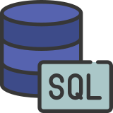
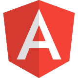
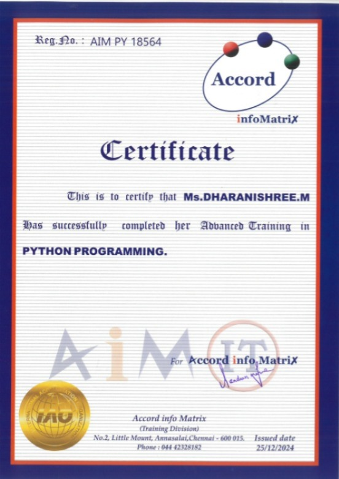
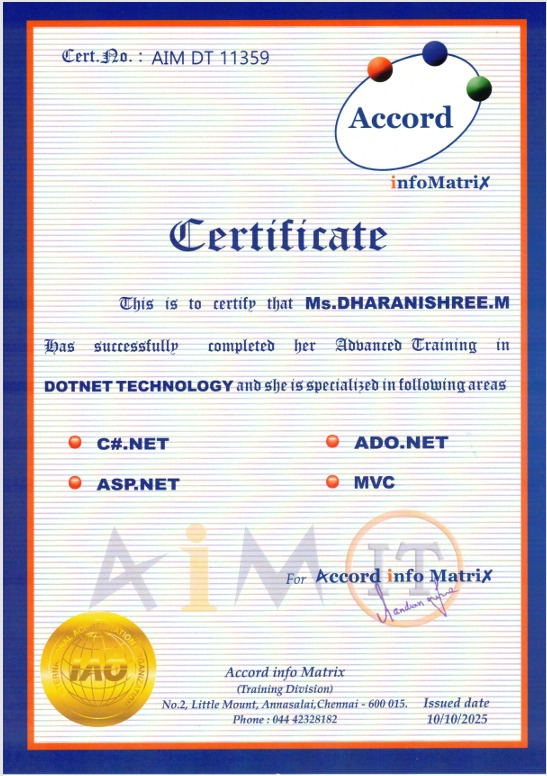
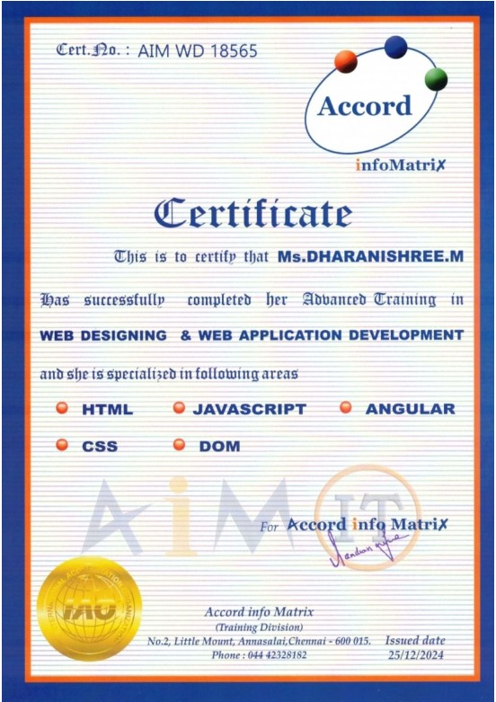
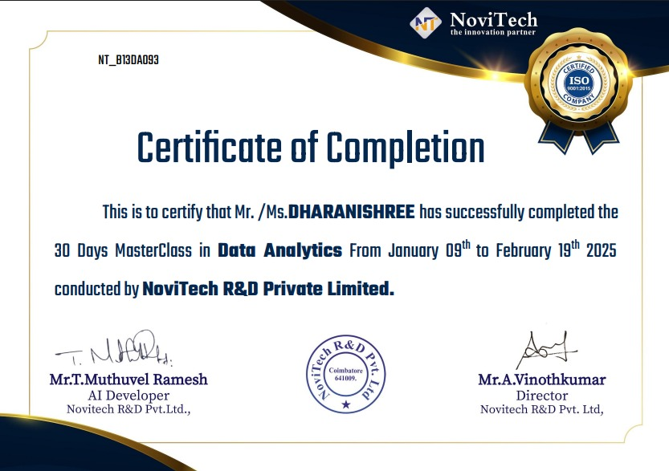
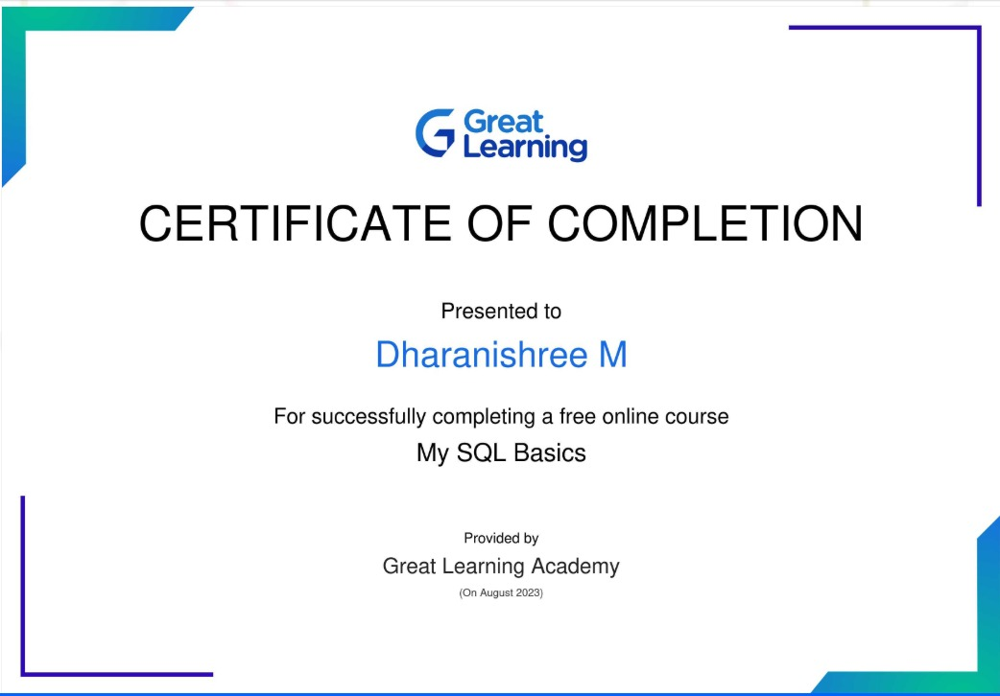

Skills
HTML
CSS
Javascript
Python

.Net

Excel
PowerBi

SQL

Angular

Tableau
Passionate about building user-friendly, data-driven web applications.
View My WorkI am currently working as a Data Analyst, where I have gained strong experience in handling data, generating insights, and supporting business decisions. To transition my career into the software industry, I have completed a Full Stack Development course with hands-on training in Python, .NET, HTML, CSS, and JavaScript.Along with my technical skills, I have built several projects and created a professional portfolio to showcase my work. I am confident in my ability to learn quickly, adapt to new technologies, and contribute effectively to development teams.I am actively looking for opportunities in the software development and web development domain,to delpoy my skills, grow professionally, and contribute to impactful projects.
HTML
CSS
Javascript
Python
.Net
Excel
PowerBi

SQL

Angular
Tableau
June 2023 – Present





The student management system is an automated version of manual Student Management System. It can handle all details about a student. The details include college details, subject details, student personnel details, academic details, exam details etc. In case of manual system they need a lot of time, manpower etc.(HTML, CSS, Javascript, Angular JS)
View on GitHubA responsive login form with form validation using HTML, CSS, and JavaScript.
View on GitHubEmail: dharani250802@gmail.com
LinkedIn: www.linkedin.com/in/dharanishree-m-2036b526b
GitHub: github.com/yourusername